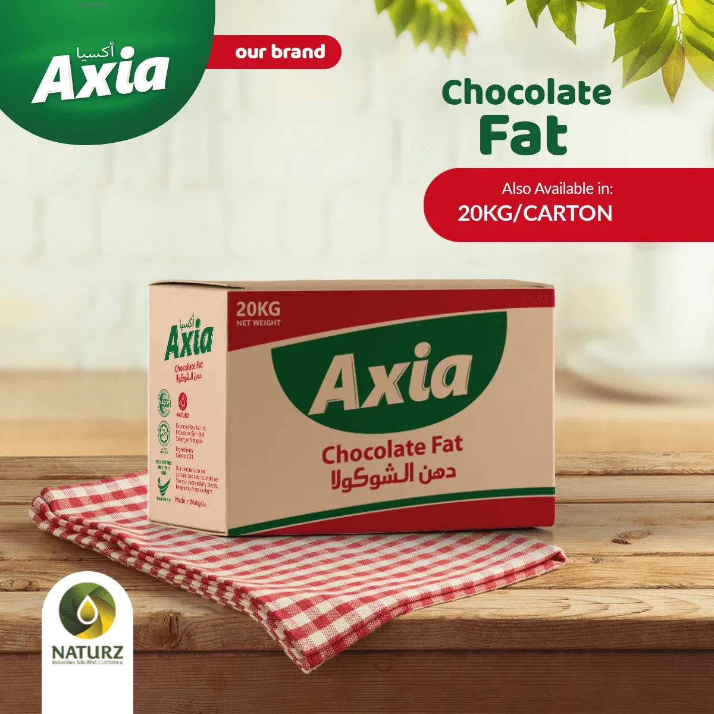
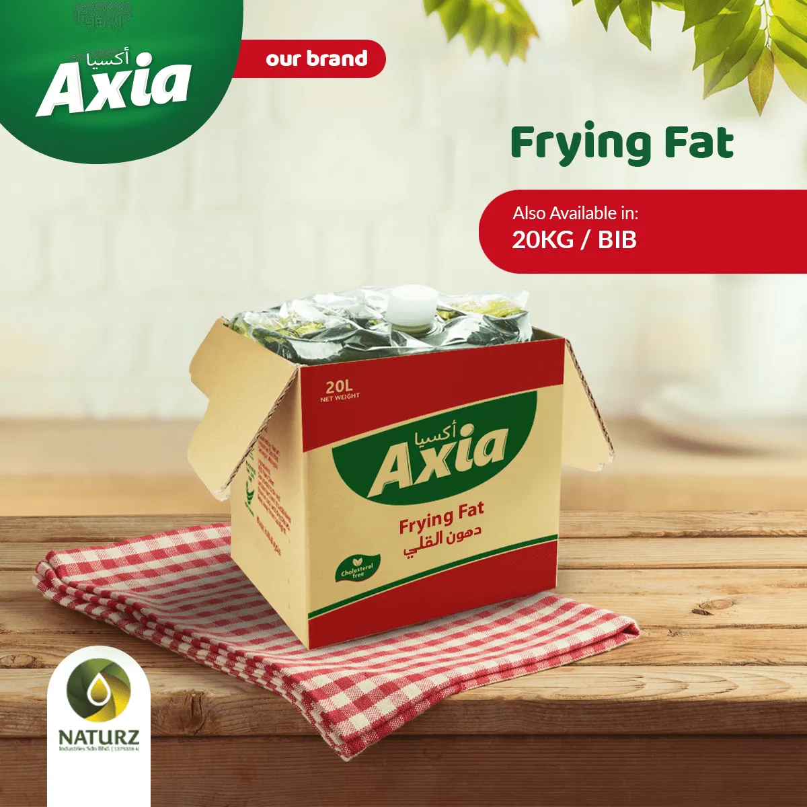
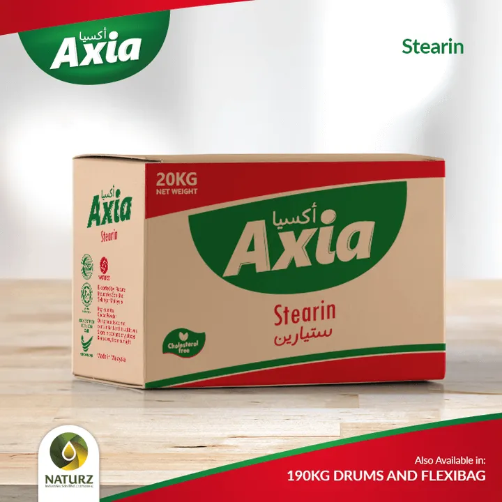

05 · Fats + Derivatives
Beyond cooking oil
Specialty fats for bakery, confectionery and industrial food applications.
Give exhibition visitors a reason to stop: Naturz is not only a cooking oil supplier; it also presents palm derivatives and specialty fat categories.

Chocolate Fat
Specialty fat category

Frying Fat
Food-service and industrial use

Palm Stearin
Palm derivative product line